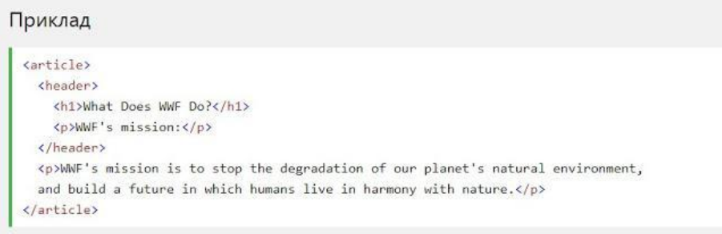

HTML5 Семантичні елементи
Семантичний елемент чітко описує як для браузера,так і для розробника
Приклади не симантичних елементів: <div> i <span> - нічого не говорить про його зміст.
Приклад семантичнихелементів: : <from> , <table> i <artikle> чітко визначає його зміст
Підримка браузерів

Семантичні елементи HTML5 підримуються у всіх сучнасних браузерах.
Крім того, ви вже можете "навчити" старих браузерів, як оброюляти "невідомі елементи".
Прочитайте про це в підтримці браузера HTML5
Нові семантичні елеиенти в HTML5
HTML5 пропонує нові семантичні елементи для визначення різних частин веб-сторінки:
- <section>
- <artikle>
- <header>
- <footer>
HTML5 <section> елемент
Елемент <section> визначає розділ в документі.
Згідно з документацією в3к'с HTML5: "розділ представляє собою тематичну угруповання контенту, зазвичай з заголовком".
Домашня сторінка зазвичай може бути розділена на розділи для ознайомлення, змісту і контактної інформації

HTML5 <article> елемент
Елемент <artikle> визначає незалежний автономний зміст
Стаття повинна мати сенс самостійно, і вона повинна мати можливість читати його незвлежно від іншої частини веб-сайту.
Приклади того, де можна використовувати елемент <article>.
- Повідомлення на форумі
- блозі
- Газетна стаття

HTML5 <header> елемент
Елемент <header> задає заголовок для документа або розділу.
Елемент <header> повинен використовуватися в якості контейнера для вступного змісту.
В однлму документі може бути декілька елементів <heager>
У наступному прикладі визначається заголовок для статті:

HTML5 <footer>
Елемент <footer> вказує нижній колонотитул для документа або розділу.
Нижній колонотитул зазвичай містить автора документа інформацію про авторське право посиланяя на умови використання, контактні дані і т.д.
В одному документі може бути кілька елементів